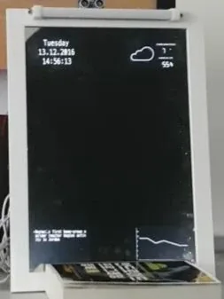

안녕하세요!
저는 9월부터 12월까지 IoT기반 SW융합서비스개발자과정을 수강하였습니다.
결론부터 말하자면 완전 추천합니다!!
사실 저는 외국어를 전공한 비전공자로 IT계열에 대해서는 문외한이었습니다. 스마트폰의 보급과 미디어의 영향으로 어플이나 사물인터넷에 대해서 관심이 생겼으나 비전공자가 도전하기에는 장벽이 높아보였습니다. 그런데 우연히 대학교 게시판에 비전공자도 지원할 수 있는 교육이 있다는 것을 알게되었고 지원했습니다. 프로그램언어도 접해본 적이 없었기 때문에 걱정이었는데 스마트미디어인재개발원의 많은 교수님과 선생님이 기초부터 차근차근 알려주셨고 독려해주셔서 너무 감사했습니다.
수업은 다양한 예제로 진행되어 지루할 틈이 없었고 수업을 따라가지 못할 때는 TA선생님(*수업을 진행하는 선생님 말고 뒤에서 도와주는 분이 또 있어욥!)이 도움을 주셔서 중간에 포기하지 않고 끝까지 과정을 마칠 수 있었습니다.
아주 기억에 남았던 것은 바로 <팀프로젝트>입니다!! 사실 대학교다닐 때 조별과제라고 하면 안좋은 기억이 많이 나는데,, 여기서는 달랐습니다! 각자 잘 할 수 있는 역할을 맡고, 하나의 목표를 달성하기 위해 협동하고 노력하는 진정한 팀프로젝트를 했습니다ㅎㅎ 이게 가능했던 것은 기획부터 선생님들이 신경을 써주셨기 때문이라고 생각해요. 기획초부터 저희의 생각을 들어주고, 막힐 때마다 피드백을 해주셨기 때문에 지치지 않을 수 있었습니다. 저는 아직도 제가 프로젝트를 어플, 웹페이지, IoT 제품을 만들었다는게 믿기지 않아요!! 혼자라면 불가능했을 일인데 아주 값진 경험이었습니당!
부끄럽지만,,이 과정을 통해 만들었던 결과물을 첨부합니다~ 바로 거울에 실시간으로 기사와 날씨, 온도 습도를 보여주는 제품입니다(가까이 가면 불도 켜져욥ㅎㅎ)
